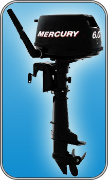

F 6 M

| Технические характеристики | |
|---|---|
| Максимальная мощность, л.с/кВт: | 6/4,4 |
| Максимальные обороты: | 5000-6000 |
| Число цилиндров: | 1 |
| Рабочий объём, см.куб: | 123 |
| Диаметр Х ход поршня, мм: | 59 Х 45 |
| Система впуска: | Два клапана с верхним распредвалом |
| Выхлопная система: | Через винт |
| Охлаждение: | Вода + термостат |
| Зажигание: | Разрядка конденсатора |
| Запуск: | Ручной |
| Передаточное отношение: | 2,15:1 |
| Система смазки: | Мокрый картер |
| Система управления: | Румпель |
| Передачи: | Передний ход-нейтраль-задний ход |
| Регулировка дифферента: | 6 положений + позиция для мелководья |
| Длина приводного вала, мм: | Короткий 381, длинный 508, яхтенный 508 |
| Системы предупреждения: | О низком давлении масла и перегреве двигателя |
| Топливный бак, л: | 1.1, встроенный |
| Сухой вес, кг: | 25 |
| Стандартный винт: | Алюминиевый 3 х 8 3/8"х 7" |
| Гарантия: | 2 года |